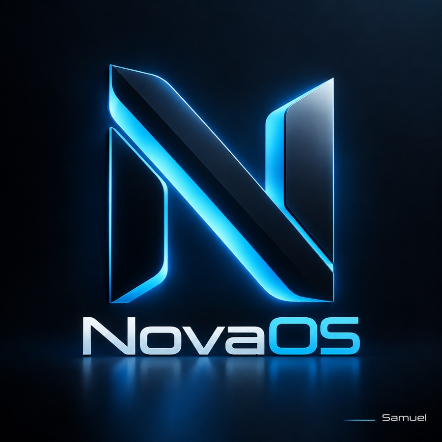

◇
NovaOS Kernel
Der bootfähige Low-Level-Zweig für Kernel-, Grafik- und Hardware-Experimente.
NovaOS ist ein experimentelles Betriebssystem-Projekt mit einem eigenen Desktop-Simulator zum schnellen Entwickeln und Testen der Nova-Oberfläche.

Der bootfähige Low-Level-Zweig für Kernel-, Grafik- und Hardware-Experimente.
Die schnelle Windows-basierte Testumgebung für Desktop, Apps, Login, Fenster und Design.
Die öffentliche Nova-Simulator-Version mit Browser, Files, Terminal, Gaming Hub und Quick Settings.
Die öffentliche Standard-Version 0.6.5.0 ist vorbereitet. Release-Dateien werden über GitHub Releases veröffentlicht.
Quellcode, Historie und zukünftige Releases an einem Ort.